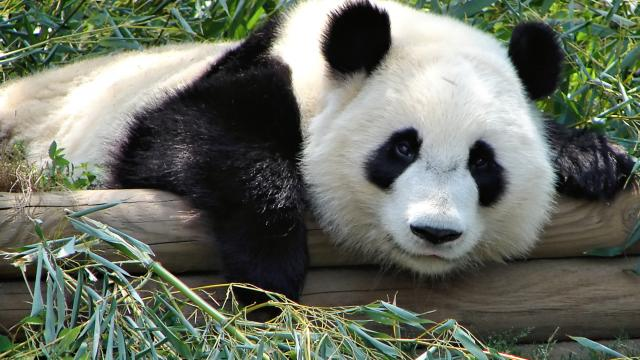

From Wikipedia:
Giant panda
Grosser Panda.JPG
Giant panda at the Ocean Park Hong Kong
Conservation status
Vulnerable (IUCN 3.1)[1]
Scientific classification e
Kingdom: Animalia
Phylum: Chordata
Class: Mammalia
Order: Carnivora
Family: Ursidae
Genus: Ailuropoda
Species: A. melanoleuca
Binomial name
Ailuropoda melanoleuca
David, 1869[2]
Subspecies
†A. m. hastorni
A. m. melanoleuca
A. m. qinlingensis
Mapa distribuicao Ailuropoda melanoleuca.png
Giant panda range
Giant panda
Panda (Chinese characters).svg
"Panda" in Traditional (top) and Simplified (bottom) Chinese characters[3]
Traditional Chinese 熊貓
Simplified Chinese 熊猫
Literal meaning "bear cat"
[show]Transcriptions
Alternative Chinese name
Traditional Chinese 貓熊
Simplified Chinese 猫熊
Literal meaning "cat bear"
[show]Transcriptions
The giant panda (Ailuropoda melanoleuca, literally "black and white cat-foot"; Chinese: 大熊猫; pinyin: dà xióng māo, literally "big bear cat"),[4] also known as panda bear or simply panda, is a bear[5] native to south central China.[1] It is easily recognized by the large, distinctive black patches around its eyes, over the ears, and across its round body. The name "giant panda" is sometimes used to distinguish it from the unrelated red panda. Though it belongs to the order Carnivora, the giant panda's diet is over 99% bamboo.[6] Giant pandas in the wild will occasionally eat other grasses, wild tubers, or even meat in the form of birds, rodents, or carrion. In captivity, they may receive honey, eggs, fish, yams, shrub leaves, oranges, or bananas along with specially prepared food.[7][8]
The giant panda lives in a few mountain ranges in central China, mainly in Sichuan, but also in neighbouring Shaanxi and Gansu.[9] As a result of farming, deforestation, and other development, the giant panda has been driven out of the lowland areas where it once lived.
